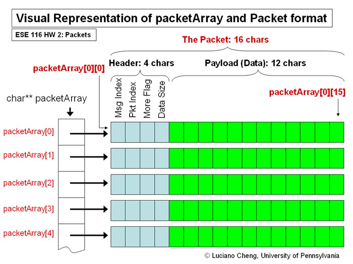

Packet Encoder/Decoder
ESE 116 Fall 2007 Homework 2
Files to Submit: packets.c
Due 10:45am Tuesday 10/30 (Late date is always 24 hrs later)
Overview:
In computer networking, a packet is a formatted block of data carried by a packet based computer network. Computer communications links such as traditional Point-to-point telecommunications links, simply transmit data as a series of bytes, characters, or bits alone.. However, when data is formatted into a packet, the network can transmit long messages more efficiently and reliably, while simultaneously sharing the network with other connections.
In this assignment you will be creating a packet encoder and corresponding decoder. The encoder will take an array of characters and encode it into a series of packets. The decoder will do the opposite. Instead of using an actual network, we will be simulating a network by randomizing the packet order between when the encoder and decoder is called.
We will be using char arrays of size 16 as our packets. Detailed formatting information is included in the source file.
There are two functions you will be writing, packData and unpackData:
- packData will take an array of chars as the 'source' data, and pack it into packets to be transmitted across the network.
- packData's first argument is the source data. As the second argument, packData is given an array of "packets", or an array of char arrays of size 16. packData should format these packets to be sent across the network according to the description included in the C file. When the packets are ready to be sent across the network, packData should return the number of packets it used.
- unpackData will take an array of "packets" and reconstruct the original data
- The packets will not be coming back in order, and unpackData has no idea about the size of the original data beforehand. It must reconstruct the original data using the information contained in the packet header, which is described in the C file.
Diagram:

Purposes of this assignment:
To practice:
- Working with arrays and array out of bounds
- Casting, relative to data type sizes
- Dealing with data and reconstructing it.
- Pulling data by casting other data types
- Understanding networking, it's concepts, and why Luke doesn't get much sleep the week a CIS553 assignment is due.
Important Notes:
- Homework assignments should be done alone. Help is available via the bulletin board and office hours.
- Please be respectful of the TAs' time and refrain from emailing them individually. The TA's take turns answering questions on the bulletin board. Please ask questions on the bulletin board or bring them to office hours.
- At the top of the Content page, read the posted Homework Submission and Policy Information
- At the top of the Content page, see the link to use for submitting homework.
Files: